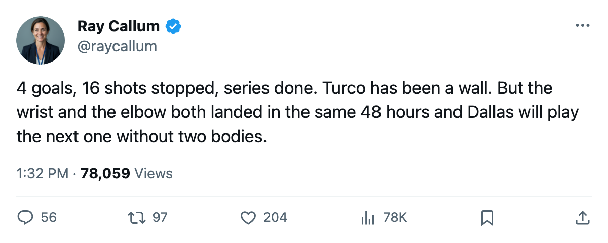

RECAP: Dallas 4, Phoenix 1 — the series closes, and two defenders go down with it
The Stars punch through for a 4-2 series win, but Lemieux and Erskine leave the Game 6 injured
 Ray CallumSenior correspondent · Home Ice Network
Ray CallumSenior correspondent · Home Ice Network
 Dallas Stars closed out the Phoenix series 4-2 Monday night in the desert, scoring 4 goals on 23 shots while holding the Coyotes to 1 on 16. Dallas led by two after one period and never let
Dallas Stars closed out the Phoenix series 4-2 Monday night in the desert, scoring 4 goals on 23 shots while holding the Coyotes to 1 on 16. Dallas led by two after one period and never let  Phoenix Coyotes within a goal after that.
Phoenix Coyotes within a goal after that.
 Mike Modano88 finished the series with 6 goals and 7 assists for 13 points in 10 games, tied at the top with
Mike Modano88 finished the series with 6 goals and 7 assists for 13 points in 10 games, tied at the top with  Jere Lehtinen86, who sits out with an arm injury through 2005-05-10.
Jere Lehtinen86, who sits out with an arm injury through 2005-05-10.  Marty Turco97 posted the line you want from a Game 6: 8-2 on the spring, 1.56 GAA, .909 save percentage. He stopped 15 of 16 shots Monday.
Marty Turco97 posted the line you want from a Game 6: 8-2 on the spring, 1.56 GAA, .909 save percentage. He stopped 15 of 16 shots Monday.
Two injuries on a night that ended well
 Claude Lemieux76 left between 2005-05-02 and 2005-05-04 with a wrist injury and won't return until 2005-06-06, well past any remaining playoff date. John Erskine70, a defenseman, went down in the same window with an elbow injury and is targeted for 2005-05-07. Neither body part suggests a long absence, but the timing is ugly: Erskine misses Game 1 of whatever comes next, and Lemieux is gone for the remainder of the postseason.
Claude Lemieux76 left between 2005-05-02 and 2005-05-04 with a wrist injury and won't return until 2005-06-06, well past any remaining playoff date. John Erskine70, a defenseman, went down in the same window with an elbow injury and is targeted for 2005-05-07. Neither body part suggests a long absence, but the timing is ugly: Erskine misses Game 1 of whatever comes next, and Lemieux is gone for the remainder of the postseason.
Dallas now has 4 players on injured reserve: Lemieux, Erskine, Lehtinen, and Pierre Turgeon, whose shoulder keeps him out until 2005-05-12. The 56 injury spells the league has recorded for this club this season is the lowest among the eight teams that made the East and West playoffs, but four bodies out with the next round starting in three days changes the math on that low total.
The lineup shift Monday: Bill Guerin dressed where Lehtinen had been, moved into a top-nine role. Andy Berenzweig69, John Erskine, and  Philippe Boucher77 all rotated defensive pairings. The coaching staff shuffled after Erskine went down, though the game was already out of reach.
Philippe Boucher77 all rotated defensive pairings. The coaching staff shuffled after Erskine went down, though the game was already out of reach.
The line after six
The Coyotes finished with 9 goals across 6 games in this series.  Sean Burke88 faced 16 shots on Monday and took the loss; he was 5-6 for the spring with a 2.60 GAA. Phoenix won 3 of its 13 playoff games against the top two seeds and survived Edmonton in the first round over 7, but it never solved Dallas's structure. The 2-3 result in Game 5 on 2005-04-30 was the last time Phoenix scored more than 2 goals in a game.
Sean Burke88 faced 16 shots on Monday and took the loss; he was 5-6 for the spring with a 2.60 GAA. Phoenix won 3 of its 13 playoff games against the top two seeds and survived Edmonton in the first round over 7, but it never solved Dallas's structure. The 2-3 result in Game 5 on 2005-04-30 was the last time Phoenix scored more than 2 goals in a game.
The next game is at home on 2005-05-04.
